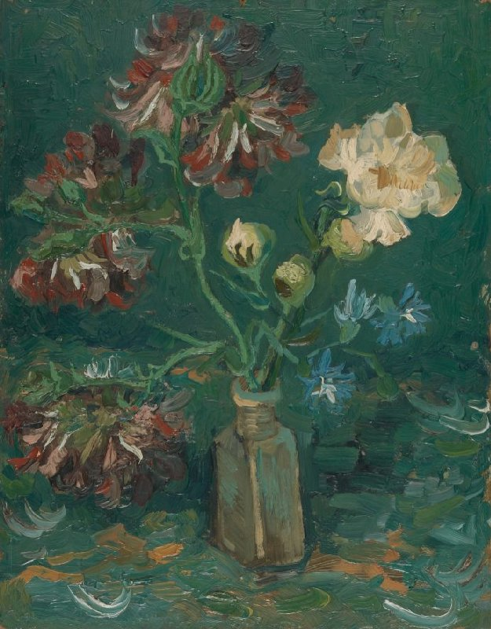

作品名 「牡丹とブルーデルフィニウムの小瓶」
花言葉 「あなたは幸福をふりまく」「清明」
デルフィニウム
「あなたは幸福をふりまく」
学名のDelphiniumは、ギリシア語でイルカを意味するDelphisからきています。これは、つぼみの形がイルカに似ていることに由来します。デルフィニウムはもともと寒冷地に咲く多年草の植物ですが、日本の夏の暑さに耐えられないため、園芸店などでは一年草として扱われています。
牡丹とブルーデルフィニウムの小瓶
フィンセント・ファン・ゴッホ
この絵は、シンプルなカードの上に、ゆったりとした筆致で描いている。これは、さまざまな色が互いにどのように影響しあうかを実験して描いた内のひとつである。兄のテオは母親に、「彼は主に花を描いているが、将来はもっと明るい色彩の絵にするつもりだ」と書いている。 テオは、知人たちが毎週ゴッホに花束を贈っていたことを記している。この花束は、彼が描いた最初の花束のひとつであり、その後も多くの花束が描かれた。
| 作品名 | 牡丹とブルーデルフィニウムの小瓶 |
| 作者 | フィンセント・ファン・ゴッホ |
| 制作年 | 1886年 |
| 種類 | ボール紙・油彩 |
| 寸法 | 34.5cm×27.0cm |
| 所蔵 | ファン・ゴッホ美術館 |